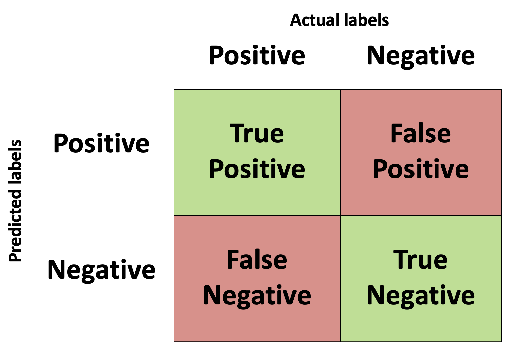
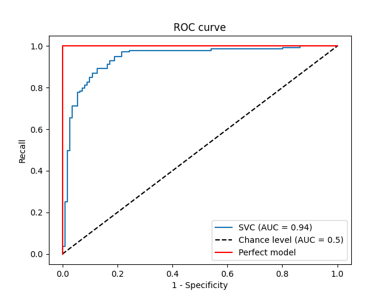

Page under construction
What is accuracy and how can we estimate how well our models are performing? The purpose of this section is to highlight some of the most common metrics that are used to analyse the performance of our models.
Regression Metrics
Accuracy may seem like a simple concept; how well our model predicts some class or value. But how do we define that concept of "how well our model performs"? We could just sum up all the correct classifications and present that as a percentage, or sum up the error of our predictions for values, but depending on the problem we are trying to solve this might not be the best method for conveying the accuracy of our model. In this topic we'll look at a few common measures of accuracy that can be used and why you may want to use one over another in certain circumstances. We'll start with basic measures of accuracy and proceed to more complex measures. It's important to note that accuracy and loss are closely related but not necessarily the same. A high loss can be incurred but one very anomalous result or prediction but the accuracy might be very high, as only a few (maybe even one) value was wrong.
Another key point to consider when thinking about accuracy/loss metrics is how easily they are to optimize. These functions will, in most cases, be used to determine the error that will be back-propagated through a model in order to update the model's parameters to better estimate the expected labels given the input features. So, we need to know how to move from that error to an update in the model parameters. Some accuracy and loss metrics are easier to optimize than others and this should also be taken into consideration when determining which accuracy/loss metric to use as this can impact the speed and cost of any model training.
How close are the predictions? L-x measures
One of the most basic measures of accuracy is to take the predictions from your model and subtract them from the ground truth values given in the labels. This is obviously only possible for supervised regression models, as it doesn't make much sense to subtract classes of models from predictions (how would you subtract a classification of cat from dog? we can somewhat do this abstraction but we will leave this to another topic as it isn't helpful when talking about accuracy and loss). In it's simplest form this measure of accuracy is the mean absolute error (MAE) which is also know as the L1 norm. It is, as the name would suggest, the average value of the sum of all the absolute differences between the predictions and the ground truth. In mathematical form this is equivalent to:
$$ MAE = \frac{1}{n}\sum_{i=0}^{i=n}|x-\hat{x}_{i}| $$
This is generally seen as a very useful measure of loss (or accuracy) as the MAE is representative of the average error in any point. However, it might be that we don't mind a little bit of error in the predictions, after all nobody is perfect! Maybe we would also like to put more weight on those predictions that are far from the truth instead.
We can do this by simply raising the difference between the prediction and the ground truth to an even power. This will do two things; make sure the resultant contribution to the accuracy/loss from each prediction is positive, and that large errors ar more important in determining accuracy than smaller errors. Commonly the error is raised to the second power (squared) as this doesn't overly emphasize outlying errors and is also easy to optimize than an L1 norm. This is referred to as the mean squared error (MSE) or the L2 norm and has the following form:
$$ MSE = \frac{1}{n}\sum_{i=0}^{i=n}||x-\hat{x}_{i}||^{2} $$
Other L-norms exist are used for various tasks and are typically defined by:
$$ Lx = \frac{1}{n}\sum_{i=0}^{i=n}||x-\hat{x}_{i}||^{x} $$
There is also an L$in \infty$in norm which simply measures the maximum absolute value in the input vector.
Classification Metrics
Accuracy
The simplest metric of how well our classification model is doing is simply the accuracy of the model which is defined as the percentage of predictions that were correctly made on a hold out set of data that wasn't seen by the model during training.
Negative log loss
Confusion Matrix
In a binary classification system we are training a model to determine if a given set of input data belongs to one of two classes. Typically, this is formulated as a hypothesis to be tested whereby we say "Does the input data belong to class X? Yes/No?". If the input data set corresponds with the class being tested then we say that this is a positive prediction, as we have answered in the affirmative to the hypothesis question. The alternative is that it is a negative prediction, the input data does not correspond with class X. The predictions of our model can be correct or incorrect, i.e. they align with the true class labels or they don't. If the predictions align with the true class label then we say it is a "True" prediction, if they don't then we say it is a "False" prediction. This means that we can have four distinct outcomes from our model when tested against a test set of data:
- True-Positive - The class label was Positive and the model correctly predicted it
- True-Negative - The class label was Negative and the model correctly predicted it
- False-Positive - The class label was Negative and the model incorrectly predicted it as Positive. Also known as a type I error.
- False-Negative - The class label was Positive and the model incorrectly predicted it as Negative. Also known as a type II error.
These four parameters are typically displayed in a matrix called the confusion matrix.
Precision, recall, F1, ROC, and AUC
That's a lot of terminology in this section title! We'll break it down piece by piece and gradually move from the confusion matrix concept we just introduced to the AUC metric.
The number of true positive (tp), false negative (fn), and false positive (fp) values defined in the previous section are used to define the precision and recall values as follows:
$in precision = \frac{tp}{tp+fp}$in
$in recall = \frac{tp}{tp+fn}$in
Recall is also referred to as the true positive rate as it measures the fraction of positive labels that were corrected identified as positive. It is also referred to as sensitivity. Precision and Recall are useful metrics to use in imbalanced datasets to understand the performance of your classifier.
Precision is best used when it is important to not have false positive values, such as if a job could be lost due to the outcome of the model, in this instance we'd want to limit the number of positive predictions that were incorrect.
Recall, on the other hand, is useful when it is more important to classify all the positive labels than it is to incur a few false positives, such as detecting fraudulent bank transactions.
We have just outlined how, in different situations, precision or recall can be the more important metric. However, in an endeavour to provide a single metric to define the performance of a classifier, the F1 metric was created which is the harmonic average of the precision and recall and is defined as:
$in F1 = 2\frac{precision * recall}{precision + recall} $in
Another problem that you may have noticed with precision, recall, and the F1 score is that if you swap the positive and negative labels when you have imbalanced datasets then the classifier will have different recall, precision, and F1 scores. A possible way to avoid this is to always use make sure that the minority class is the positive label. Proposed alternatives have also included taking into account all sectors of the confusion matrix such as using a P4 score which uses the precision and recall as well as the specificity and negative prediction value (NPV) metrics also:
$in specificity = \frac{tn}{tn+fp} $in
$in NPV = \frac{tn}{tn+fn} $in
$in P4 = \frac{4}{\frac{1}{precision} + \frac{1}{recall} + \frac{1}{specificity} + \frac{1}{NPV}} =
\frac{4}{}$in
Another parameter which can affect the precision and recall values is the threshold used to classify the class labels. If the threshold, a value between 0 and 1, is set to 1 then every value is classified as the negative class, and if the threshold is set to 0 then every example is classified as the positive class. To understand how the threshold affects the performance of the model, the recall is plotted against the false positive rate (equal to 1-specificity). This plot is called the receiver operating characteristic curve. The ideal ROC curve for a perfect classifier would be a single point of recall 1 and false positive rate (1-specificity) of 0. A random guess of the classification, at least for a very large number of samples and in a balanced dataset, would approach a y=x line in this plot
We noted that the perfect classifier would have a false positive rate (FPR) of 0 and a recall of 1 but this is for any reasonable threshold used in the classification. The ROC curve will also plot any unreasonable classification thresholds as well, such as positive and negative infinity. For these extremes threshold values either non or all of the values will be classified positive respectively. This means that our perfect model would also plot at (0,0) and (1,1) on the ROC plot as well. This would give an area under this curve of 1. A random guess at the classification, under the assumption of a balanced dataset, would be 0.5. So, although the curve itself only gives a visual cue of the performance of the model for various thresholds, we can use this plot to define a metric to quantitatively describe the performance of our classifier by measuring the area under the curve. This is known as the ROC AUC, or simply AUC, where AUC stands for "area under curve". The closer the value to 1, the better the performance fo the classifier.